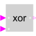

XorLogical 'xor': y = u1 xor u2 |

|
Information
This information is part of the Modelica Standard Library maintained by the Modelica Association.
The output is true if exactly one input is true, otherwise the output is false.
Connectors (3)
| u1 |
Type: BooleanInput Description: Connector of first Boolean input signal |
|
|---|---|---|
| u2 |
Type: BooleanInput Description: Connector of second Boolean input signal |
|
| y |
Type: BooleanOutput Description: Connector of Boolean output signal |
Used in Examples (3)
|
Modelica.Clocked.Examples.Elementary.BooleanSignals Example of a Sample block for Boolean signals with direct feed-through in the continuous-time and the clocked partition |
|
|
Modelica.Clocked.Examples.Elementary.BooleanSignals Example of an AssignClock block for Boolean signals |
|
|
Modelica.Clocked.Examples.Elementary.BooleanSignals Example of an AssignClockVectorized block for Boolean signals |